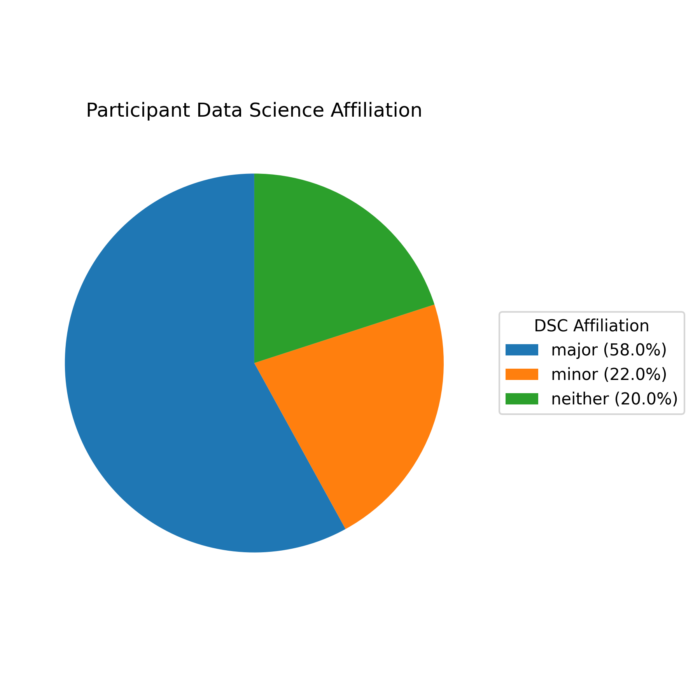
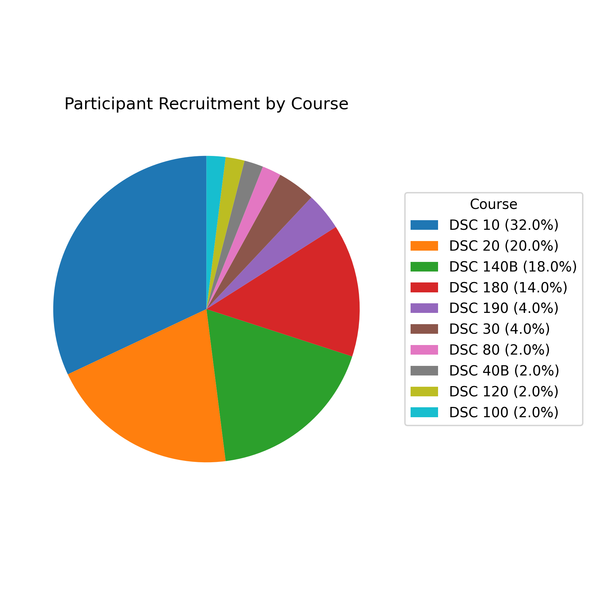
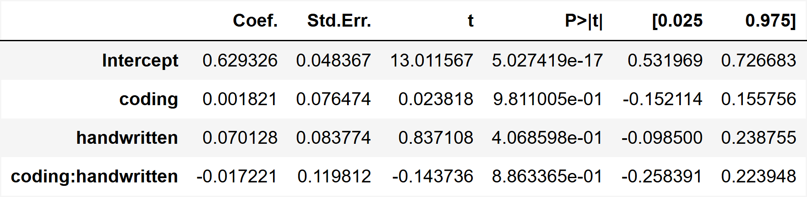
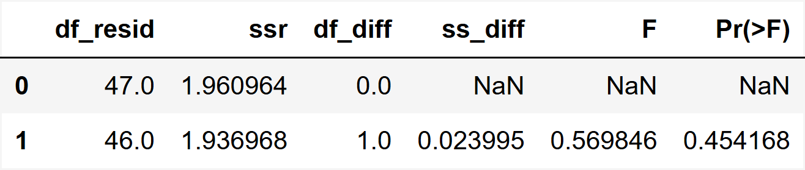
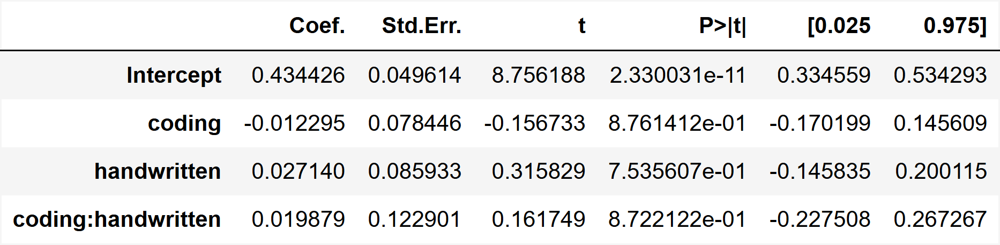
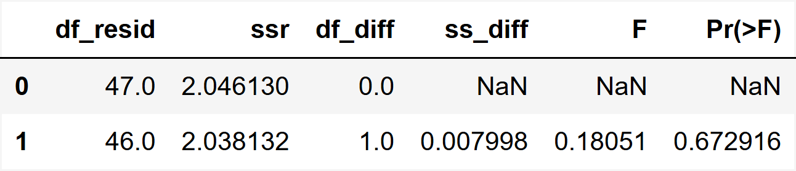
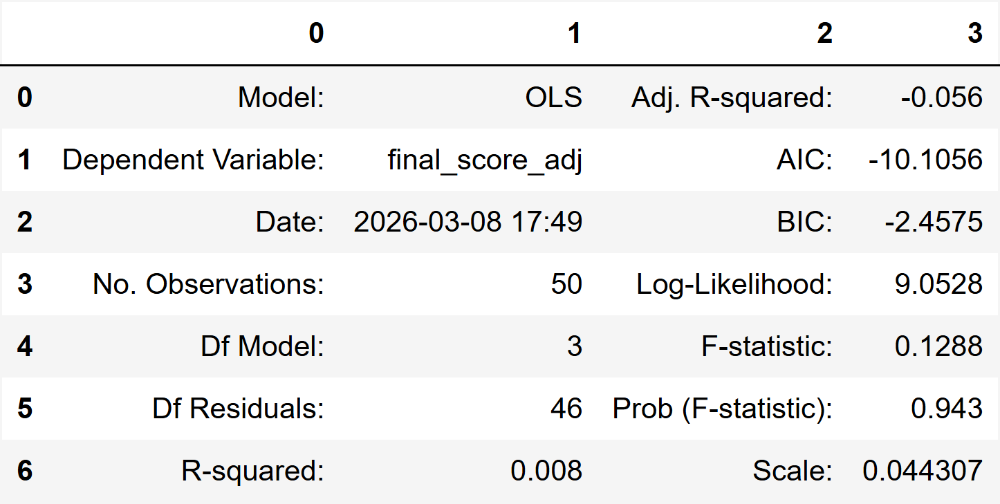
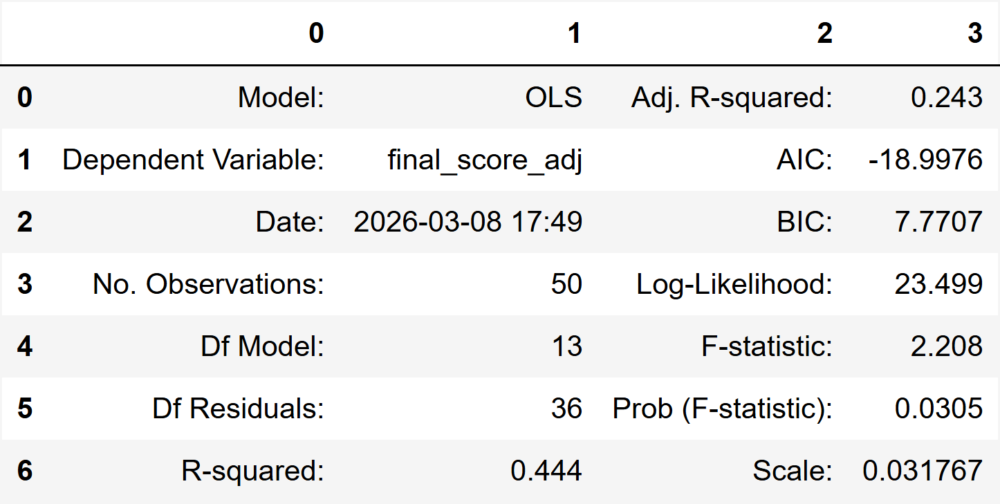
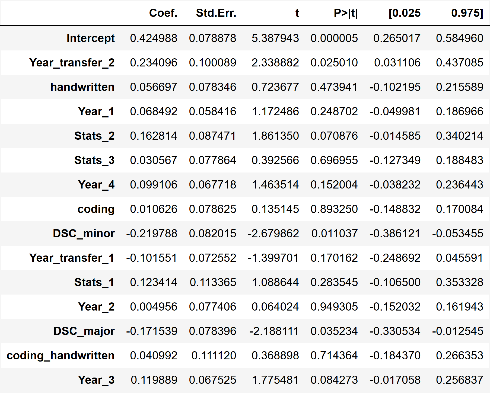

DSC 180 Capstone Project
Simulation Coding Exercises for Teaching Probability Theory
A classroom-based study on whether simulation coding exercises improve conceptual learning in probability, compared with handwritten and mixed-modality approaches.
Motivation
Probability is a foundational topic in STEM education and plays an important role in everyday decision-making, yet many students find it unintuitive and difficult to learn. Concepts such as conditional probability, rare events, and long-run behavior are often introduced through formulas and symbolic manipulation, which can make it difficult for students to build an intuitive understanding of what these ideas mean in practice.
This challenge matters beyond the classroom. Probabilistic reasoning is essential in contexts such as interpreting medical tests, evaluating uncertainty, and making sense of data-driven claims. Because of this, improving how probability is taught is important not only for academic learning, but also for helping students apply quantitative reasoning in real-world situations.
Research Goal
Traditional probability instruction often emphasizes derivations and handwritten problem solving, which help students practice formal reasoning but may not always support intuitive understanding. In contrast, simulation-based and coding-centered activities allow students to generate repeated samples, visualize outcomes, and observe theoretical ideas in action.
Our project explores whether these simulation-based coding exercises can serve as an effective teaching tool for probability. To study this, we developed instructional materials for key probability topics and evaluated them in a four-condition, full-factorial experiment comparing a control group, a coding-only group, a handwritten-only group, and a coding + handwritten group.
More specifically, we ask whether coding activities lead to improved learning outcomes relative to traditional materials, and whether combining coding with handwritten work provides additional benefit beyond using either approach alone.
Participants and Recruitment
We recruited 50 participants from data science–related courses at the University of California San Diego during the first half of the winter quarter. Recruitment primarily came from courses such as DSC 10, DSC 20, DSC 140B, and DSC 180, with smaller numbers of participants drawn from several other DSC courses. Outreach was conducted through in-class announcements and email invitations distributed by course instructors.
Before beginning the study, participants completed an intake questionnaire administered through Google Forms. The questionnaire collected background information including class standing, Data Science and Mathematics affiliations, number of statistics courses taken, and self-reported familiarity with statistics, Python programming, and Chebyshev’s inequality.
Among the 50 participants, 29 identified as Data Science majors, 11 as Data Science minors, and 10 reported no formal Data Science affiliation. On a five-point scale, participants reported moderate Python proficiency on average (mean = 3.34) and relatively limited familiarity with Chebyshev’s inequality (mean = 2.50). These patterns suggest that, although the sample was drawn from data science–related courses, prior preparation still varied across students.

Distribution of participants by Data Science affiliation.
Most participants reported either a Data Science major or minor, while a smaller portion had no formal Data Science affiliation.

Distribution of participants by recruitment course.
Recruitment was concentrated in a small number of DSC courses, with DSC 10, DSC 20, DSC 140B, and DSC 180 contributing most of the participant pool.
These participant characteristics are important for interpreting the results. Students majoring in Data Science, or students recruited from more advanced courses, are more likely to have completed multiple statistics courses and to have stronger prior exposure to probability and statistical concepts. As a result, prior background may act as a confounding factor when comparing instructional conditions, since higher performance could partly reflect existing preparation rather than the effect of the teaching intervention itself.
Study Design
Our study used a four-condition, full-factorial design to compare the effectiveness of different instructional approaches for learning probability. Participants were randomly assigned to one of four treatment groups that varied by whether they received coding exercises, handwritten exercises, both, or neither.
Throughout the analysis and the figures shown later in this report, these four groups are labeled numerically as follows:
- Group 1: No coding, no handwritten
- Group 2: Coding only
- Group 3: Handwritten only
- Group 4: Coding + handwritten
This numbering convention is used in several plots and model outputs throughout the report, where the horizontal axis is abbreviated as 1, 2, 3, and 4. Defining the labels here helps connect the later visualizations back to the instructional conditions represented by each group.
Materials were administered through Gradescope, and all activities focused on Chebyshev’s inequality, a topic with which many participants reported limited prior familiarity. After completing the assigned materials, each participant took a final assessment. The resulting score served as the primary outcome measure for evaluating differences in learning outcomes across the four instructional conditions.
Main Findings
This section presents the primary results for both raw final scores and confidence-adjusted final scores. Exploratory plots show modest differences across groups, while the formal statistical tests suggest that these differences are not statistically significant under the current sample.
Raw Final Score
The raw final score results show modest visual differences across groups, but the formal analyses do not detect statistically significant effects.

Distribution of raw final assessment scores across the four instructional groups.
Groups with structured engagement activities appear to perform slightly better overall, although the differences remain modest.
Interaction Effect Test
H0: β3 = 0 | Model: β0 + β1(coding) + β2(handwritten) + β3(coding × handwritten)

Coefficient estimates for the raw final score model.
The interaction term is not statistically significant, suggesting no measurable additional benefit from combining both activities.
Equal-Effect Comparison: Coding vs. Handwritten
H0: β1 = β2 | Reduced model: β0 + β1(coding + handwritten) + β3(coding × handwritten)

ANOVA comparison between the full and reduced raw-score models.
The result suggests no meaningful difference between the estimated effects of coding and handwritten exercises on raw final score.
Confidence-Adjusted Final Score
The adjusted final score results follow a similar pattern, with slightly lower scores overall after accounting for confidence.
 by Group.png)
Distribution of confidence-adjusted final assessment scores across the four groups.
The adjusted scores are generally lower than the raw scores, but the overall group pattern remains similar.
Interaction Effect Test
H0: β3 = 0 | Model: β0 + β1(coding) + β2(handwritten) + β3(coding × handwritten)

Coefficient estimates for the adjusted final score model.
The interaction effect remains not statistically significant after accounting for confidence.
Equal-Effect Comparison: Coding vs. Handwritten
H0: β1 = β2 | Reduced model: β0 + β1(coding + handwritten) + β3(coding × handwritten)

ANOVA comparison between the full and reduced adjusted-score models.
The result again suggests no meaningful difference between the effects of coding and handwritten exercises.
Interpretation and Discussion
This section interprets the main patterns observed in the study beyond the formal hypothesis tests. Overall, the results suggest only modest differences across sections, while the adjusted-score analysis and the intake-feature model provide additional insight into how students performed and evaluated their own understanding.
Why Confidence-Adjusted Scores Matter

Calibration by section: mean score generally increases with reported confidence.
Students who report higher confidence also tend to be more likely to answer correctly, suggesting that confidence contains useful information about calibration and self-evaluation.
This pattern helps explain why the adjusted score is useful in addition to the raw score. The raw score captures correctness alone, while the adjusted score also reflects whether confidence is aligned with correctness. In this sense, the adjusted score provides a broader view of student understanding by incorporating an element of self-evaluation rather than correctness alone.
Added Value of Intake Features
To better understand variation in adjusted final score, we compared the original adjusted-score model based only on section-related terms with a richer model that also incorporates intake-form variables. This comparison helps show whether student background characteristics explain additional variation in performance.

Baseline adjusted-score model using only section-related predictors.
This baseline model has limited explanatory power, with R-squared = 0.008 and adjusted R-squared = -0.056.

Expanded adjusted-score model including intake-form variables.
After adding intake-form variables, the model fit improves substantially. R-squared increases to 0.444 and adjusted R-squared increases to 0.243.
Comparing these two models suggests that intake-form variables add meaningful explanatory value. The adjusted R-squared increases from -0.056 to 0.243, while the R-squared increases from 0.008 to 0.444. The overall model significance also improves, with the Prob(F-statistic) dropping from 0.943 in the baseline model to 0.0305 in the intake-feature model. Taken together, these results suggest that student background characteristics explain adjusted final score more effectively than section assignment alone.

Coefficient estimates for the adjusted-score model with intake features.
The coefficient table shows how section indicators and intake variables relate to adjusted final score. The feature guide below explains the shortened variable names used in the model output.
Feature Name Guide
The coefficient table uses shortened variable names. The groups below explain what each label refers to.
Activity Terms
coding: students in sections with coding exercises
handwritten: students in sections with handwritten exercises
coding_handwritten: interaction term for students assigned both activities
DSC Affiliation
DSC_major: students who reported being a Data Science major
DSC_minor: students who reported being a Data Science minor
Academic Year
Year_1: first-year students
Year_2: second-year students
Year_3: third-year students
Year_4: fourth-year students
Year_transfer_1: third-year student, first-year transfer
Year_transfer_2: fourth-year student, second-year transfer
Statistics Background
Stats_1: taken at least one introductory statistics course
Stats_2: advanced introductory probability or statistics course
Stats_3: basic introductory probability or statistics course
Reference group: no reported background in this category
Overall, the coefficient table suggests that student background characteristics contribute more to explaining adjusted final score than section assignment alone. Academic year, prior statistics preparation, and DSC affiliation appear more informative than the section-based indicators, while the coding, handwritten, and interaction terms remain relatively small. This is consistent with the earlier results, where section-based differences were present descriptively but remained modest in magnitude.
Study Limitations
Several limitations should be considered when interpreting these findings. First, the sample size was relatively small, which limits the ability to detect subtle differences across instructional conditions. Second, the assessment combined different types of probability tasks, so advantages from one learning mode may have been diluted when all questions were aggregated into a single overall score.
In addition, confidence reporting likely varies across students. Some students may use the confidence scale more aggressively, while others may report confidence more conservatively. As a result, the adjusted score is informative and useful for discussion, but it is also influenced by differences in how students evaluate and report their own certainty.
Key Takeaways
This project was motivated by a simple question: can simulation-based coding activities help students learn probability more effectively? To explore this, we developed a set of probability teaching materials and then tested their usefulness in a classroom-based study against traditional handwritten approaches.
Our results suggest that structured engagement activities are beneficial overall, but that coding and handwritten exercises had statistically similar effects under the current sample. We also did not observe a significant additional benefit from combining both forms of activity. In this sense, the project suggests that simulation-based coding materials are a promising teaching approach, though not necessarily one that outperforms handwritten work in a clearly measurable way in this setting.
The study also highlights several directions for future work, including larger sample sizes, stronger control for baseline preparation, and broader testing across additional probability topics. Beyond this evaluation, we maintain a separate repository containing the teaching materials we developed, including exercises, solutions, and lesson notes. If you are interested in this project or would like to see the materials we explored, please contact Peter Chi at pbchi@ucsd.edu.